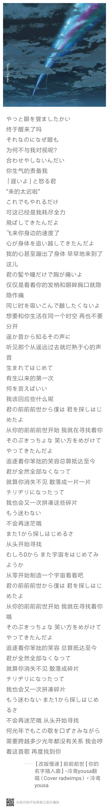

前前前世
歌曲背景
专辑
《前前前世》（ぜんぜんぜんせ）是新海诚监督动画电影新作《你的名字。》的主题曲。 RADWIMPS的同名新专辑《你的名字》已经在2016年8月24日发售。 新海诚监督动画电影新作《你的名字。》已在2016年8月26日日本全国上映。
在电影「你的名字。」的预告片中，公开了主题曲「前前前世」。
此次RADWIMPS的专辑除了主题歌还会收录电影里的3首插曲。
虽然至今为止RADWIMPS的作品都是由主唱野田洋次郎创作的，但这张新专辑的22首歌曲中，
桑原和武田第一次尝试了作曲。
新海诚与RADWIMPS的主唱野田洋次郎在2年前认识，经过无数次细致的探讨才完成这部作品。 关于剧情设定就花了1年以上的时间，每一个步骤都追求完美不留纰漏。 RADWIMPS多种多样的音乐性， 新海诚监督如诗如画般世界观，两者碰撞在一起发生了不可思议的化学反应， 这也是音乐同动画的一次空前紧密的合作。
歌词：
